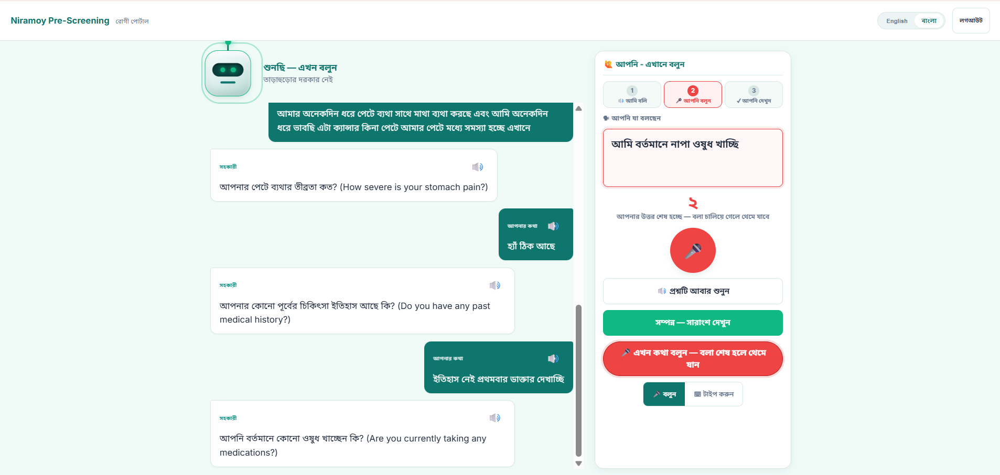
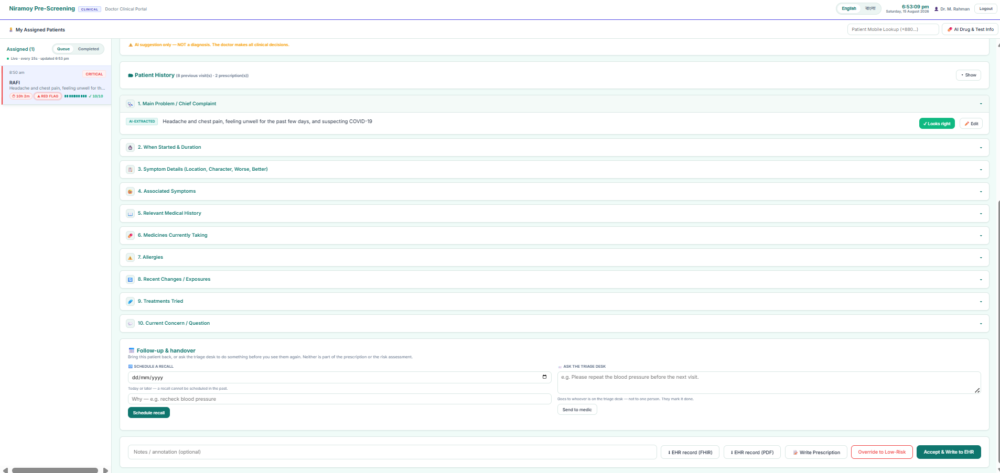
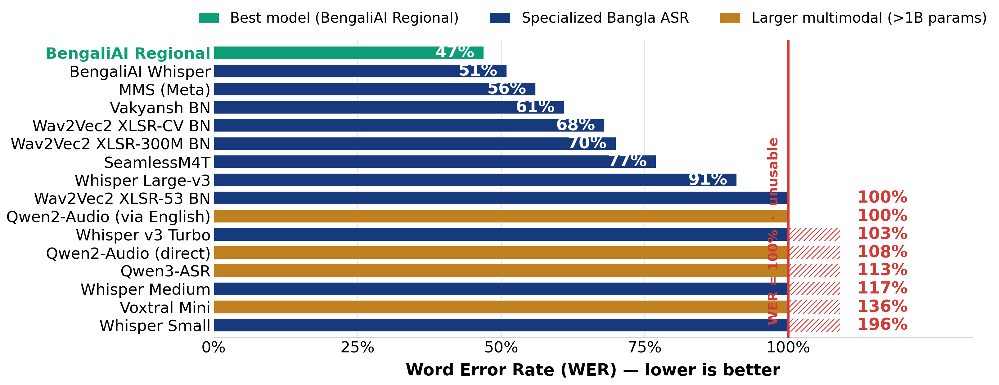
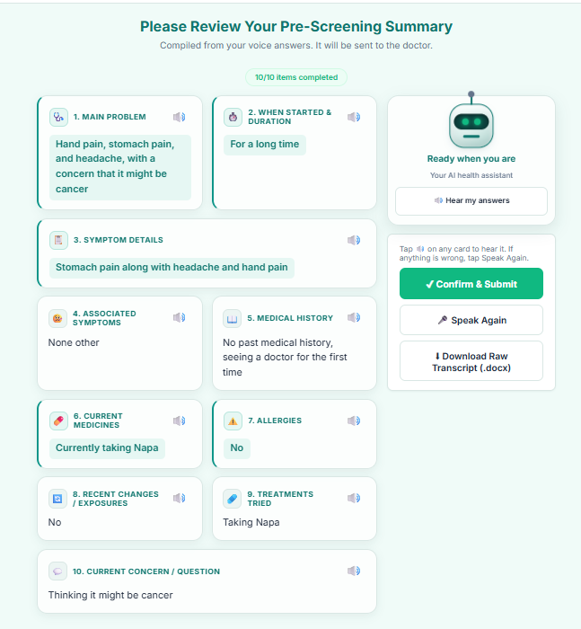

Patient Portal — Voice-First CapturePatient answers spoken follow-ups in Bangla by voice; exact words are kept and each field confirmed.
Patient speaks symptoms in Bangla / dialect (typing fallback).
Web Speech API (bn-BD) transcribes; raw words stored unchanged.
Cleaned in a separate field, shown back to confirm.
LLM builds a 10-field summary; follow-ups loop until complete.
Risk Low→Critical with rule-based red-flag check + reason.
Doctor accepts, overrides or prescribes — decision stays human.
No-diagnosis report stored & exported: FHIR / PDF / DOCX.







Design: modular services · swappable AI providers · CPU-only · Windows + Arch Linux.
A complete voice-first, safety-first prototype turns spoken Bangla / dialect symptoms into a structured, doctor-ready EHR / FHIR record across three portals. It reduces intake burden and keeps clinical judgment with humans — it assists, and never diagnoses.